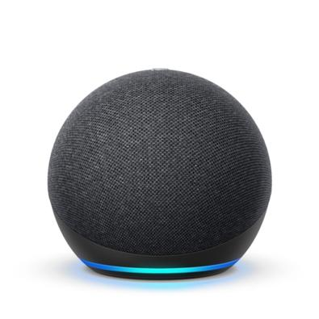
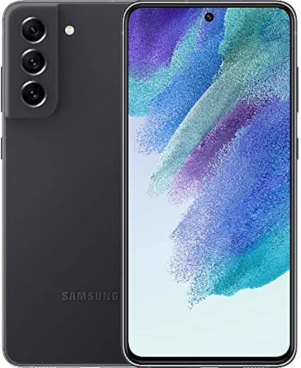
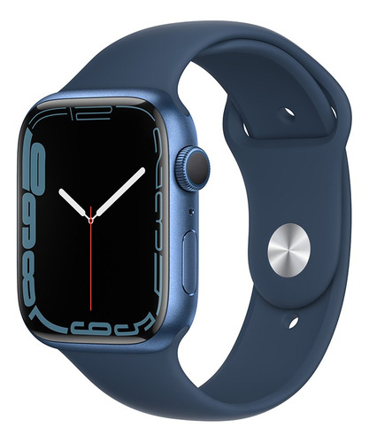
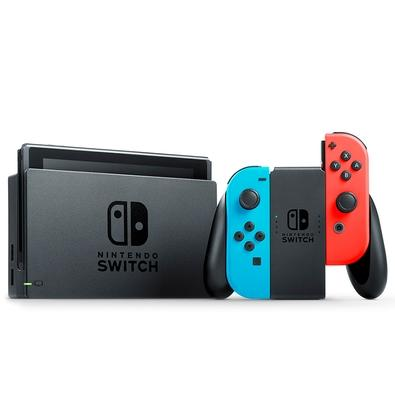
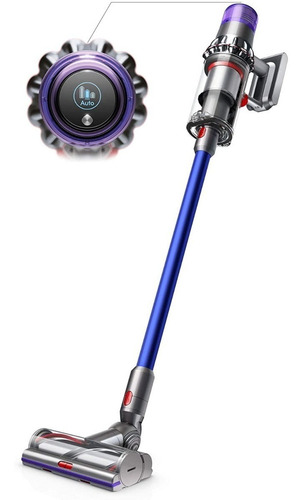
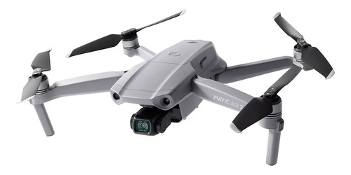

Amazon Echo Dot
O Amazon Echo Dot 4 é um dispositivo inteligente que pode ser controlado por voz. Ele se conecta
ao
serviço de assistente virtual Alexa da Amazon, permitindo que você controle a música, faça
perguntas, controle outros dispositivos inteligentes em sua casa e muito mais.

Samsung Galaxy S21 FE
O Samsung Galaxy S21 FE é um dos smartphones mais recentes da Samsung. Ele possui uma tela
grande,
câmeras poderosas e uma bateria duradoura. O S21 também é compatível com a rede 5G, oferecendo
velocidades de internet mais rápidas.

Apple Watch Series 7
O Apple Watch Series 7 é o último modelo de relógio inteligente da Apple. Ele possui uma tela
maior do que as versões anteriores e uma bateria que dura o dia todo. O Apple Watch Series 7
pode ser usado para monitorar sua atividade física, receber notificações e até mesmo fazer
chamadas telefônicas.

Nintendo Switch
O Nintendo Switch é um console de jogos híbrido que pode ser usado tanto em casa quanto em
movimento. Ele vem com dois controladores removíveis, permitindo que você jogue sozinho ou com
outras pessoas. O Switch tem uma grande variedade de jogos disponíveis, desde jogos casuais até
jogos mais complexos.

Dyson V11 Absolute
O Dyson V11 Absolute é um aspirador de pó sem fio com um motor poderoso e uma bateria duradoura.
Ele vem com uma variedade de acessórios que o tornam ideal para limpar carpetes, estofados e
pisos duros. O Dyson V11 Absolute também possui um sistema de filtragem avançado que captura
partículas finas de poeira e alérgenos.

DJI Mavic Air 2
O DJI Mavic Air 2 possui uma câmera 4K de alta resolução, uma bateria que dura até 34 minutos de
voo e recursos inteligentes, como rastreamento automático de objetos, evasão de obstáculos e
transmissão ao vivo de vídeo em HD para seu smartphone ou tablet. Com este drone, você pode
capturar imagens e vídeos incríveis de paisagens, eventos esportivos, viagens e muito mais.
